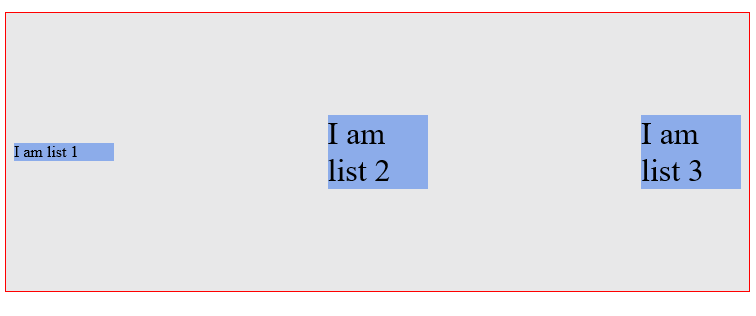
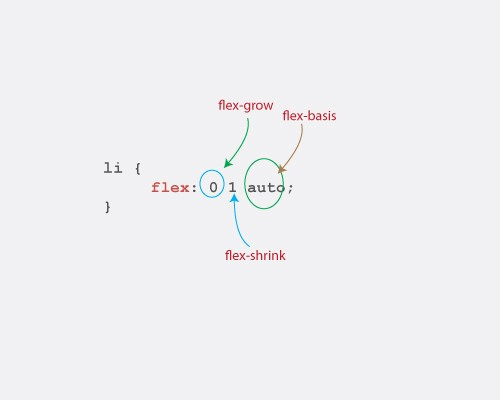
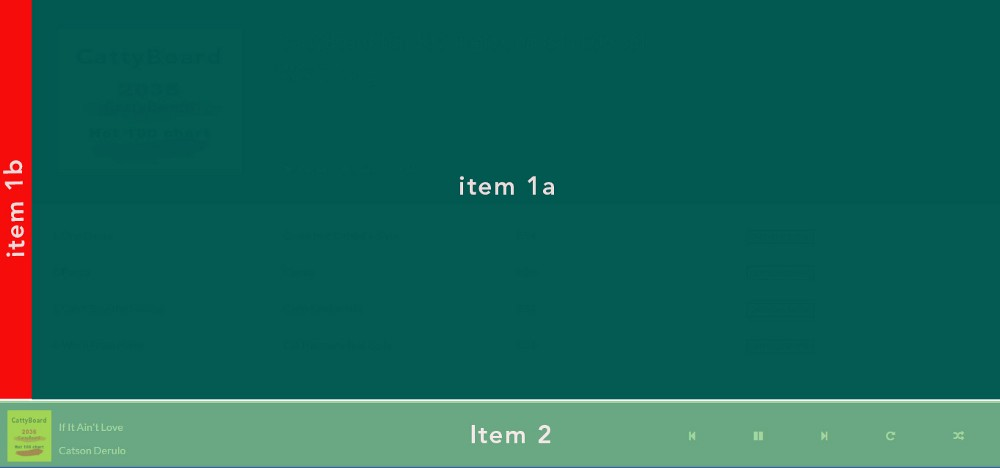
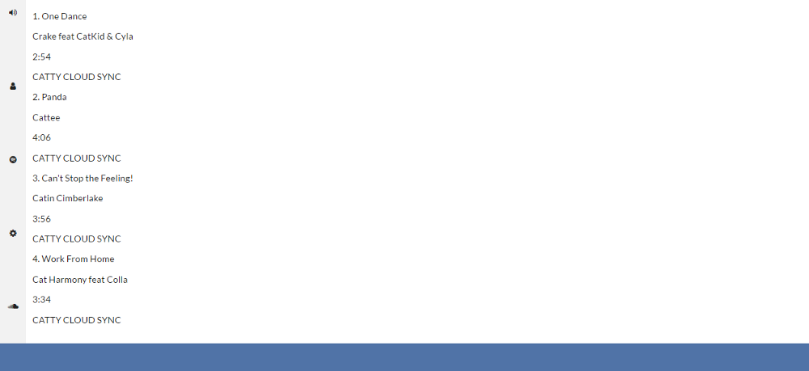

理解Flexbox：你需要知道的一切
这篇文章介绍了Flexbox模块所有基本概念，而且是介绍Flexbox模块的很好的一篇文章，所以这篇文章非常的长，你要有所准备。
学习Flexbox的曲线
@Philip Roberts在Twitter上发了一个推：
学习Flexbox可不是件很有趣的事情，因为它将挑战你所知道的CSS布局方面的知识。当然这也是非常正常的，因为一切知识都是值得学习的。
另外你要认值对待Flexbox。因为它是现代Web布局的主流方式之一，不会很快就消失。它也成为一个新的W3C标准规范。既然如此，那让我们张开双臂，开始拥抱它吧！
你将学习
我将带你先了解Flexbox的一些基础知识。我想这是开始尝试学习Flexbox的必经阶段。
学习基础知识是件很有意思的事情，更有意思的是可以通过学习这些基础理论知识，在实际的应用程序中使用Flexbox。
我将带您亲历很多“小知识点”之后，在文章末尾，使用Flexbox来做一个音乐应用程序的布局（UI界面布局）。
看上去是不是棒棒的？
在开始进入学习Flexbox构建音乐应用程序的布局之前，你还将需要了解Flexbox在响应式Web设计中所起的作用。
我将会把这一切都告诉你。

上图是@Jona Dinges设计的。
在你开始构建音乐应用程序界面之前，我将一起陪你做一些练习。这看起来可能很无聊，但这是让你彻底掌握Flexbox必经的过程，只有这样才能让你很擅长的使用Flexbox。
说了这么多的废话，那我们赶紧的开始吧！（难怪篇幅长，原来开始有这么的...(^_^)）
简介
CSS在过去的几年里已发生了很大的变化。CSS中引入了设计师喜欢的filters、transitions和transforms等。但有些东西已经消失了，可是我们都渴望这些东西能一直存在。
使用CSS制作智能的、灵活的页面布局一直以来都是CSSer想要的，也有很人使用各种不同的CSS黑魔法去实现智能的页面布局。
我们总是不得不忍受float、display:table这些布局方式带来的痛苦。如果你完写过一段时间的CSS，你可能有相关体会。如果你没有写过CSS，那你是幸运的，在这也欢迎你来到CSS布局中一个更美好的世界中！
似乎设计师和前端开发人员的这次祈祷终于被上帝听到了。而且这一次，在很大的风格上做出了改变。
现在我们可以抛弃老司机们常用的CSS布局的黑魔法。也可以和float以及display:table说拜拜。
是时候去拥抱一个更简洁的制作智能布局的现代语法。欢迎CSS Flexbox模块的到来。
Flexbox是什么
根据规范中的描述可知道，Flexbox模块提供了一个有效的布局方式，即使不知道视窗大小或者未知元素情况之下都可以智能的，灵活的调整和分配元素和空间两者之关的关系。简单的理解，就是可以自动调整，计算元素在容器空间中的大小。
这样听起来是不是太官方了，其实我也明白这种感觉。
如何开始使用Flexbox
这是每个人都会问的第一个问题，答案是比你预想的要简单得多。
开始使用Flexbox时，你所要做的第一件事情就是声明一个Flex容器(Flex Container)。
比如一个简单的项目列表，我们常常看到的HTML形式如下所示：
<ul> <!--parent element-->
<li></li> <!--first child element-->
<li></li> <!--second child element-->
<li></li> <!--third child element-->
</ul>
一眼就能看出来，这就是一个无序列表(ul)里有三个列表元素(li)。
你可以把ul称为父元素，li称为子元素。
要开始使用Flexbox，必须先让父元素变成一个Flex容器。
你可以在父元素中显式的设置display:flex或者display:inline-flex。就这么的简单，这样你就可以开始使用Flexbox模块。
实际是显式声明了Flex容器之后，一个Flexbox格式化上下文（Flexbox formatting context）就立即启动了。
告诉你，它不是像你想像的那么复杂。
使用一个无序列表(ul)和一群列表元素(li)，启动Flexbox格式化上下文的方式如下：
/* 声明父元素为flex容器 */
ul {
display:flex; /*或者 inline-flex*/
}
给列表元素(li)添加一点基本样式，这里你可以看到发生了什么。
li {
width: 100px;
height: 100px;
background-color: #8cacea;
margin: 8px;
}
你将看到的效果如下图所示：
你可能没有注意到，但事实上已经发生了变化。现在已经是一个Flexbox格式化上下文。
记住，默认情况下，div在CSS中垂直堆栈的，也就是说从上到下排列显示，就像下图这样：
上面的图是你希望的结果。
然而，简单的写一行代码display:flex，你立即就可以看到布局改变了。
现在列表元素(li)水平排列，从左到右。就像是你使用了float一样。

Flexbox模块的开始，正如前面的介绍，在任何父元素上使用display:flex。
你可能不明白为什么这一变化就能改变列表元素的排列方式。但我可以负责任的告诉你，你深入学习之后就能明白。现在你只需要信任就足够了。
理解flex display是使用Flexbox的一个开始。
还有一件事情，我需要提醒您注意。
一旦你显式的设置了display属性的值为flex，无序列表ul就会自动变成Flex容器，而其子元素（在本例中是指列表元素li）就变成了Flex项目。
这些术语会一次又一次的提到，我更希望你通过一些更有趣的东西来帮助你学习Flexbox模块。
我使用了两个关键词，我们把重点放到他们身上。了解他们对于理解后面的知识至关重要。
- Flex容器（Flex Container）：父元素显式设置了
display:flex - Flex项目（Flex Items）：Flex容器内的子元素
这些只是Flexbox模块的基础。
Flex容器属性
flex-direction || flex-wrap || flex-flow || justify-content || align-items || align-content
通过上面的内容，我们了解了一些基础知识。知道了Flex容器和Flex项目是什么，以及如何启动Flexbox模块。
现在是一个好好利用它们的时间了。
有设置一个父元素作为一个Flex容器，几个对齐属性可以使用在Flex容器上。
正如你的块元素的width设置了200px，有六种不同的属性可以用于Flex容器。
好消息是，定义这些属性不同于你以往使用过的任何一种方法。
flex-direction
flex-direction属性控制Flex项目沿着主轴（Main Axis）的排列方向。
它具有四个值：
/* ul 是一个flex容器 */
ul {
flex-direction: row || column || row-reverse || column-reverse;
}
简单点来说，就是flex-direction属性让你决定Flex项目如何排列。它可以是行（水平）、列（垂直）或者行和列的反向。
从技术上讲，水平和垂直在Flex世界中不是什么方向（概念）。它们常常被称为主轴（Main-Axis）和侧轴（Cross-Axis）。默认设置如下所示。

通俗的说，感觉Main-Axis就是水平方向，从左到右，这也是默认方向。Cross-Axis是垂直方向，从上往下。
默认情况下，flex-direction属性的值是row。它让Flex项目沿着Main-Axis排列（从左向右，水平排列）。这就解释了本文开始部分时无序列表的表现效果。
尽管flex-direction属性并没有显式的设置，但它的默认值是row。Flex项目将沿着Main-Axis从左向右水平排列。
如果把flex-direction的属性值修改成column，这时Flex项目将沿着Cross-Axis从上到下垂直排列。不再是从左向右排列。
flex-wrap
flex-wrap属性有三个属性值：
ul {
flex-wrap: wrap || nowrap || wrap-reverse;
}
我将通过一个例子来解释如何使用flex-wrap属性。首先在前面的无序列表的HTML结构中多添加几个列表项li。
将Flex容器设置适合大小以适合放置更多的列表项目或者说让列表项目换行排列。这两种方式，你是怎么想的？
<ul> <!--parent element-->
<li></li> <!--first child element-->
<li></li> <!--second child element-->
<li></li> <!--third child element-->
<li></li>
<li></li>
<li></li>
</ul>
幸运的是，新添加的Flex项目刚好适合Flex容器大小。也就是Flex项目能刚好填充Flex容器。
再深入一点。
继续给Flex容器内添加Flex项目，比如说添加到10个Flex项目。这个时候会发生什么？
同样的，Flex容器还是能容纳所有的子元素（Flex项目）排列，即使浏览器出现了水平滚动条（当Flex容器中添加了很多个Flex项目，至使Flex容器的宽度大于视窗宽度）。
这是每一个Flex容器的默认行为。Flex容器会在一行内容纳所有的Flex项目。这是因为flex-wrap属性的默认值是nowrap。也就是说，Flex项目在Flex容器内不换行排列。
ul {
flex-wrap: nowrap; /*Flex容器内的Flex项目不换行排列*/
}
no-wrap不是不可改变的。我们可以改变。
当你希望Flex容器内的Flex项目达到一定数量时，能换行排列。当Flex容器中没有足够的空间放置Flex项目（Flex项目默认宽度），那么Flex项目将会换行排列。把它（flex-wrap）的值设置为wrap就有这种可能：
ul {
flex-wrap: wrap;
}
现在Flex项目在Flex容器中就会多行排列。
在这种情况下，当一行再不能包含所有列表项的默认宽度，他们就会多行排列。即使调整浏览器大小。
就是这样子。注意：Flex项目现在显示的宽度是他们的默认宽度。也没有必要强迫一行有多少个Flex项目。
除此之外，还有一个值：wrap-reverse。
是的，你猜对了。它让Flex项目在容器中多行排列，只是方向是反的。
flex-flow
flex-flow是flex-direction和flex-wrap两个属性的速记属性。
你还记得使用border的速记写法？border: 1px solid red。这里的概念是相同的，多个值写在同一行，比如下面的示例：
ul {
flex-flow: row wrap;
}

相当于：
ul {
flex-direction: row;
flex-wrap: wrap;
}
除了这个组合之外，你还可以尝试一些其它的组合。flex-flow: row nowrap，flex-flow: column wrap，flex-flow: column nowrap。
我相信你了解这些会产生什么样的效果，要不尝试一下。
justify-content
Flexbox模块真得很好。如果你仍然不相信它的魅力，那么justify-content属性可能会说服你。
justify-content属性可以接受下面五个值之一：
ul {
justify-content: flex-start || flex-end || center || space-between || space-around
}
justify-content属性又能给我们带来什么呢？提醒你一下，你是否还记得text-align属性。其实justify-content属性主要定义了Flex项目在Main-Axis上的对齐方式。
来看一个简单的例子，还是考虑下面这个简单的无序列表：
<ul>
<li>1</li>
<li>2</li>
<li>3</li>
</ul>
添加一些基本样式：
ul {
display:flex;
border: 1px solid red;
padding: 0;
list-style: none;
background-color: #e8e8e9;
}
li {
background-color: #8cacea;
width: 100px;
height: 100px;
margin: 8px;
padding: 4px;
}
你将看到的效果是这样：

通过justify-content属性，可以让Flex项目在整个Main-Axis上按照我自己的欲望设置其对齐方式。
可能会有以下几种类型。
flex-start
justify-content的默认属性值是flex-start。
flex-start让所有Flex项目靠Main-Axis开始边缘（左对齐）。
ul {
justify-content: flex-start;
}

flex-end
flex-end让所有Flex项目靠Main-Axis结束边缘（右对齐）。
ul {
justify-content: flex-end;
}

center
和你预期的一样，center让所有Flex项目排在Main-Axis中间（居中对齐）。
ul {
justify-content: center;
}
space-between
space-between让除了第一个和最一个Flex项目的两者间间距相同（两端对齐）。
ul {
justify-content: space-between;
}

你注意到有什么不同？看看下图的描述：

space-around
最后，space-around让每个Flex项目具有相同的空间。
ul {
justify-content: space-around;
}

和space-between有点不同，第一个Flex项目和最后一个Flex项目距Main-Axis开始边缘和结束边缘的的间距是其他相邻Flex项目间距的一半。看看下图的描述：

千万不要觉得这些练习太多，这些练习可以帮助熟悉Flexbox属性的语法。也能更好的帮助你更好的理解它们是如何影响Flex项目沿着Main-Axis的对齐方式。
align-items
align-items属性类似于justify-content属性。只有理解了justify-content属性，才能更好的理解这个属性。
align-items属性可以接受这些属性值：flex-start || flex-end || center || stretch || baseline。
ul {
align-items: flex-start || flex-end || center || stretch || baseline
}
它主要用来控制Flex项目在Cross-Axis对齐方式。这也是align-items和justify-content两个属性之间的不同之处。
下面是不同的值对Flex项目产生的影响。不要忘记这些属性只对Cross-Axis轴有影响。
stretch
align-items的默认值是stretch。让所有的Flex项目高度和Flex容器高度一样。

flex-start
正如你所希望的flex-start让所有Flex项目靠Cross-Axis开始边缘（顶部对齐）。

flex-end
flex-end让所有Flex项目靠Cross-Axis结束边缘（底部对齐）。

center
center让Flex项目在Cross-Axis中间（居中对齐）。

baseline
让所有Flex项目在Cross-Axis上沿着他们自己的基线对齐。

结果看上去有点像flex-start，但略有不同。那“baseline”到底是什么呢？下图应该能帮助你更好的理解。

align-content
还记得前面讨论的wrap属性吗？我们在Flex容器中添加了更多的Flex项目。让Flex容器中的Flex项目多行排列。
align-content属性用于多行的Flex容器。它也是用来控制Flex项目在Flex容器里的排列方式，排列效果和align-items值一样，但除了baseline属性值。
像align-items属性一样，它的默认值是stretch。你现在应该熟悉这些值。那它又是如何影响Flex容器里的10个Flex项目多行排列方式。
stretch
使用stretch会拉伸Flex项目，让他们沿着Cross-Axis适应Flex容器可用的空间。
你看到的Flex项目间的间距，是Flex项目自身设置的margin值。
flex-start
之前你看到过flex-start。这次是让多行Flex项目靠Cross-Axis开始边缘。沿着Cross-Axis从上到下排列。因此Flex项目在Flex容器中顶部对齐。
flex-end
flex-end刚好和flex-start相反，让多行Flex项目靠着Cross-Axis结束位置。让Flex项目沿着Cross-Axis从下到上排列，即底部对齐。
center
你猜到了，center让多行Flex项目在Cross-Axis中间。在Flex容器中居中对齐。
这是Flex容器的最后一个属性。你现在知道如何使用各种Flex容器属性。你可以在工作中实践这些属性。
Flex项目属性
order || flex-grow || flex-shrink || flex-basis
在前一节中，我解释了Flex容器及其对齐属性。
确实漂亮。我想你也找到了感觉。现在我们把注意力从Flex容器转移到Flex项目及其对齐属性。
像Flex容器，对齐属性也可以用在所有的Flex项目。那我们开始吧。
order
允许Flex项目在一个Flex容器中重新排序。基本上，你可以改变Flex项目的顺序，从一个位置移动到另一个地方。
这不会影响源代码。这也意味着Flex项目的位置在HTML源代码中不需要改变。order属性的默认值是0。它可以接受一个正值，也可以接受一个负值。
值得注意的是，Flex项目会根据order值重新排序。从底到高。
要说明总得需要一个例子。考虑下面这个无序列表：
<ul>
<li>1</li>
<li>2</li>
<li>3</li>
<li>4</li>
</ul>
默认情况下，所有Flex项目的order值都是0。把前面给列表的样式运用过来。看到的效果如下：
Flex项目显示是按HTML源代码中的顺序来显示，Flex项目1、2、3和4。
如果因为某些原因，在不改变HTML文档源码情况之下，想把Flex项目一从1变成最后。不能修改HTML文档源码意思是你不能把HTML代码改成：
<ul>
<li>2</li>
<li>3</li>
<li>4</li>
<li>1</li>
</ul>
这个时候就需要order属性。这个时候你需要把Flex项目一的order值设置比其他Flex项目值更大。
如果你以前使用过z-index属性，那你就能更好的理解这个属性。
li:nth-child(1){
order: 1; /*设置一个比0更大的值*/
}
Flex项目就重新进行了排列，从低到高排列。不要忘记了，默认情况下，Flex项目2、3、4的order值为0。现在Flex项目1的order值为1。
Flex项目2、3和4的order值都是0。HTML源代码秩序并没有修改过。如果给Flex项目2的order设置为2呢？
是的，你猜对了。它也增加堆栈。现在代表Flex项目的最高的order值。
当两个Flex项目具有相同的order值呢？在下面的示例中，把Flex项目1和3设置相同的order值。
li:nth-child(1) {
order: 1;
}
li:nth-child(3) {
order: 1;
}
现在仍是从低到高排列。这次Flex项目3排在Flex项目1后面，那是因为在HTML文档中Flex项目3出现在Flex项目1后面。
如果两个以下Flex项目有相同的order值时，Flex项目重新排序是基于HTML源文件的位置进行排序。这个属性就不做过多的解释。接下来继续介绍其他的属性。
flex-grow 和 flex-shrink
Flex项目最优秀的一点就是灵活性。flex-grow和flex-shrink属性允许我们玩这个灵活性。
flex-grow和flex-shrink属性控制Flex项目在容器有多余的空间如何放大（扩展），在没有额外空间又如何缩小。
他们可能接受0或者大于0的任何正数。0 || positive number。
接下来阐述它们的使用。使用一个简单的无序列表做为例子，它只包含一个列表项。
<ul>
<li>I am a simple list</li>
</ul>
ul {
display: flex;
}
添加更多的样式，看起来像这样：
默认情况下，flex-grow属性值设置为0。表示Flex项目不会增长，填充Flex容器可用空间。取值为0就是一个开和关的按钮。表示flex-grow开关是关闭的。
如果把flex-grow的值设置为1，会发生：
现在Flex项目扩展了，占据了Flex容器所有可用空间。也就是说开关打开了。如果你试着调整你浏览器的大小，Flex项目也会缩小，以适应新的屏幕宽度。
为什么？默认情况下，flex-shrink的值是1，也就是说flex-shrink开关也是打开的。
可以仔细看看flex-grow和flex-shrink属性在各种情况下的效果，这样能更好的帮助你理解。
flex-basis
记得前面我说过，Flex项目是当我没有的。但我们也可以控制。
flex-basis属性可以指定Flex项目的初始大小。也就是flex-grow和flex-shrink属性调整它的大小以适应Flex容器之前。
前面介绍的是非常生要的，所以我们需要花一点时间来加强对他们的理解。
flex-basis默认的值是auto。flex-basis可以取任何用于width属性的任何值。比如 % || em || rem || px等。
注意：如果flex-basis属性的值是0时，也需要使用单位。即flex-basis: 0px不能写成flex-basis:0。
这里同样使用只有一个列表项的列表做为示例。
<ul>
<li>I am a simple list</li>
</ul>
ul {
display: flex
}
li {
padding: 4px; /*some breathing space*/
}
默认情况，Flex项目的初始宽度由flex-basis的默认值决定，即：flex-basis: auto。Flex项目宽度的计算是基于内容的多少来自动计算（很明显，加上了padding值）。
这意味着，如果你增加Flex项目中的内容，它可以自动调整大小。
<ul>
<li>I am a simple list AND I am a simple list</li>
</ul>
然而，如果你想将Flex项目设置一个固定的宽度，你也可以这样做：
li {
flex-basis: 150px;
}
现在Flex项目的宽度受到了限制，它的宽度是150px。
它变得更加有趣。
flex速记
flex是flex-grow、flex-shrink和flex-basis三个属性的速记（简写）。
在适当的时候，我建议你使用flex，这样比使用三个属性方便。
li {
flex: 0 1 auto;
}
上面的代码相当于：
li {
flex-grow: 0;
flex-shrink: 1;
flex-basis: auto;
}
注意它们之间的顺序。flex-grow第一，然后是flex-shrink，最后是flex-basis。缩写成GSB，可以帮助你更好的记忆。
如果flex属性值中少一个值，会发生什么呢？
如果你只设置了flex-grow和flex-shrink值，flex-basis可能是默认值0。这就是所谓的绝对flex项目。只有当你设置了flex-basis，你会得到一个相对flex项目。
/* 这是一个绝对的Flex项目 */
li {
flex: 1 1; /*flex-basis 默认值为 0*/
}
/* 这是一个相对的Flex项目 */
li {
flex-basis: 200px; /* 只设置了flex-basis的值 */
}
我知道你在想什么。你肯定想知道相对和绝对的Flex项目是什么？我将在后面回答这个问题。你只需要再次盲目信任就足够了。
让我们看看一些非常有用的flex值。
flex: 0 1 auto
li {
flex: 0 1 auto;
}
这相当于写了flex默认属性值以及所有的Flex项目都是默认行为。

很容易理解这一点，首先看看flex-basis属性。flex-basis设置为auto，这意味着Flex项目的初始宽度计算是基于内容的大小。
明白了？
把注意力放到下一个属性，flex-grow设置为0。这意味着flex-grow不会改变Flex项目的初始宽度。也就是说，flex-grow的开关是关闭的。
flex-grow控制Flex项目的增长，如果其值设置为0，Flex项目不会放大以适应屏幕（Flex容器大小）。
最后，flex-shrink的值是1。也就是说，Flex项目在必要时会缩小。
应用到Flex项目效果就是这样子：

注意：Flex项目没有增长（宽度）。如果有必要，如果调整浏览器(调小浏览器宽度)，Flex项目会自动计算宽度。
flex: 0 0 auto
li {
flex: 0 0 auto;
}
这个相当于flex: none。
还是老规矩：宽度是被自动计算，不过弹性项目不会伸展或者收缩（因为二者都被设置为零）。伸展和收缩开关都被关掉了。
它基本上是一个固定宽度的元素，其初始宽度是基于弹性项目中内容大小。
看看这个 flex 简写是如何影响两个弹性项目的。一个弹性项目会比另一个容纳更多内容。
应该注意到的第一件事情是，这两个弹性项目的宽度是不同的。因为宽度是基于内容宽度而自动计算的，所以这是预料得到的。
试着缩放一下浏览器，你会注意到弹性项目不会收缩其宽度。它们从父元素中突出来了，要看到所有内容，必须横向滚动浏览器。
不要着急，稍后我会展示如何处理这种怪异的行为。
在缩放浏览器时，弹性项目不会收缩，而是从弹性容器中突出来了。
flex: 1 1 auto
这与 flex: auto 项目相同。
还是按我前面立的规矩。即，自动计算初始化宽度，但是如果有必要，会伸展或者收缩以适应整个可用宽度。
伸展和收缩开关打开了，宽度自动被计算。
此时，项目会填满可用空间，在缩放浏览器时也会随之收缩。
flex: "positive number"
这里正数可以代表任何正数（没有引号）。这与 flex: “正数” 1 0 相同。
flex: 2 1 0 与写为 flex: 2 是一样的，2 表示任何正数。
li {
flex: 2 1 0; / *与 flex: 2相同 */
}
与前面我立的规矩一样，即，将弹性项目的初始宽度设置为零（嗯？没有宽度？），伸展项目以填满可用空间，并且最后只要有可能就收缩项目。
弹性项目没有宽度，那么宽度该如何计算呢？
这个时候 flex-grow 值就起作用了，它决定弹性项目变宽的程度。由它来负责没有宽度的问题。
当有多个弹性项目，并且其初始宽度 flex-basis 被设置为基于零的任何值时，比如 0px，使用这种 flex 简写更实用。
实际发生的是，弹性项目的宽度被根据 flex-grow 值的比例来计算。
考虑如下两个列表项标记及 CSS：
<ul>
<li>I am One</li>
<li>I am Two</li>
</ul>
ul {
display: flex;
}
/* 第一个弹性项目 */
li:nth-child(1) {
flex: 2 1 0; /* 与写成 flex: 2 相同*/
}
/* 第二个弹性项目 */
li:nth-child(2){
flex: 1 1 0;
background-color: #8cacea;
}
记住设置 flex-grow : 1，会让弹性项目填满可用空间。伸展开关打开了。
这里有两个弹性项目。一个的 flex-grow 属性值是 1，另一个是 2，那么会出现啥情况呢？
两个项目上的伸展开关都打开了。不过，伸展度是不同的，1 和 2。
二者都会填满可用空间，不过是按比例的。
它是这样工作的：前一个占 1/3 的可用空间，后一个占 2/3 的可用空间。
知道是我怎么得到这结果的么？
是根据基本的数学比例。"单项比例 / 总比例"，我希望你没有漏过这些数学课。
看到出现啥情况了么？
即使两个弹性项目内容一样大（近似），它们所占空间还是不同。宽度不是基于内容的大小，而是伸展值。一个是另一个的约两倍。
有关于
flex-grow、flex-basis和flex-shrink之间的详细计算，可以点击@Chris Wright写的《Flexbox adventures》博文。译文可以点击这里。
align-self
align-self 属性更进一步让我们更好地控制弹性项目。
你已经看到 align-items 属性是如何有助于整体对齐弹性容器内的所有弹性项目了。
如果想改变一个弹性项目沿着侧轴的位置，而不影响相邻的弹性项目，该怎么办呢？
这是 align-self 属性大展拳脚的地方了。
该属性的取值可以是这些值之一：auto || flex-start || flex-end || center || baseline || stretch。
li:first-of-type {
align-self: auto || flex-start || flex-end || center || baseline || stretch
}
这些值你已经熟悉过了，不过作为回顾，如下是它们如何影响特定目标项目。这里是容器内的第一个项目。目标弹性项目是红色的。
flex-end
flex-end将目标项目（Flex项目）对齐到Cross-Axis的末端。
center
center将目标项目（Flex项目）对齐到Cross-Axis的中间。
stretch
stretch会将目标项目拉伸，以沿着Cross-Axis填满Flex容器的可用空间（Flex项目高度和Flex容器高度一样）。
baseline
baseline将目标项目沿着基线对齐。它与flex-start的效果看起来是一样的，不过我相信你理解了基线是什么。因为前面已经解释过。
auto
auto 是将目标Flex项目的值设置为父元素的 align-items值，或者如果该元素没有父元素的话，就设置为 stretch。
在下面的情况下，弹性容器的 align-items 值为 flex-start。这会把所有弹性项目都对齐到Cross-Axis的开头。目标Flex项目现在继承了 flex-start 值，即父元素的 align-item 值。
如下是上面Flex项目的基础样式。这样你可以对发生的事情理解得更好点。
ul {
display: flex;
border: 1px solid red;
padding: 0;
list-style: none;
justify-content: space-between;
align-items: flex-start; /* 影响所有弹性项目 */
min-height: 50%;
background-color: #e8e8e9;
}
li {
width: 100px;
background-color: #8cacea;
margin: 8px;
font-size: 2rem;
}
现在你差不多已经为有趣的部分做好准备了 :-)
绝对和相对Flex项目
前面了解了一些基本概念，但重要的是要澄清一些重要的概念。那绝对和相对Flex项目之间到底有啥区别呢？二者之间主要的区别在于间距及如何计算间距。
一个相对Flex项目内的间距是根据它的内容大小来计算的。而在绝对Flex项目中，只根据 flex 属性来计算，而不是内容。
考虑如下的标记：
<ul>
<li>
This is just some random text to buttress the point being explained.
Some more random text to buttress the point being explained.
</li>
<li>This is just a shorter random text.</li>
</ul>
两个列表项元素，一个比另一个的文本多得多。
加点样式：
ul {
display: flex; /*触发弹性盒*/
}
li {
flex: auto; /*记住这与 flex: 1 1 auto; 相同*/
border: 2px solid red;
margin: 2em;
}
如下是结果：

如果你已经忘了的话，flex: 1 1 auto 是与 flex-grow: 1、flex-shrink: 1 和 flex-basis: auto 相同的。
Flex项目的初始宽度是被自动计算的（flex-basis: auto），然后会伸展以适应可用空间（flex-grow: 1）。
当Flex项目因为被设置为 flex-basis: auto，而导致宽度被自动计算时，是基于Flex项目内包含的内容的大小而计算。
上面示例中Flex项目的内容大小不相同。因此，Flex项目的大小就会不相等。
既然各个宽度开始就不是相等的（它是基于内容的），那么当项目伸展时，宽度也保持不相等。
上面示例中的Flex项目是相对Flex项目。
下面我们把Flex项目变成绝对的, 就是说这次它们的宽度是基于 flex 属性，而不是内容的大小。一行代码就可以出奇迹。
li {
flex: 1 ; /*与 flex: 1 1 0 相同*/
}
效果如下：
这次看到两个Flex项目的宽度相同了吗？
Flex项目的初始宽度是零（flex-basis: 0），并且它们会伸展以适应可用空间。当有两到多个Flex项目的 flex-basis 取值为0时，它们会基于 flex-grow值共享可用空间。
这个之前就讨论过了。现在宽度不会基于内容大小而计算，而是基于指定的 flex 属性值来计算。这样你就明白了吧。对么？
绝对Flex项目的宽度只基于 flex 属性，而相对Flex项目的宽度基于内容大小。
Auto-margin 对齐
当心Flex项目上的 margin: auto 对齐。当在Flex项目上使用 margin: auto 时，事情看起来就很怪异了。
你需要理解会发生什么。它会导致不可预料的结果，不过我打算解释解释。
当在Flex项目上使用 margin: auto 时，值为 auto 的方向（左、右或者二者都是）会占据所有剩余空间。
这玩意有点难理解。下面我来说明一下。
考虑如下的导航栏标记以及 CSS 样式：
<ul>
<li>Branding</li>
<li>Home</li>
<li>Services</li>
<li>About</li>
<li>Contact</li>
</ul>
ul {
display: flex;
}
li {
flex: 0 0 auto;
}
你可以看到如下的效果：
这里有几件事情要注意：
flex-grow值为设置为0。这就解释了为什么列表项不会伸展。- Flex项目向Main-Axis的开头对齐（这是默认行为）。
- 由于项目被对齐到Main-Axis开头，右边就有一些多余的空间。看到了吧？
现在在第一个列表项（branding）上使用 margin: auto，看看会出啥情况。
li:nth-child(1) {
margin-right: auto; /*只应用到右外边距*/
}
刚刚发生了什么？之前的剩余空间现在已经被分配到第一个Flex项目的右边了。
还记得我前面说的话吧？当在Flex项目上使用 margin: auto 时，值为 auto 的方向（左、右或者二者都是）会占据所有剩余空间。
如果想让一个Flex项目的两边都用自动外边距对齐，该怎么办呢？
/* 如果愿意的话，也可以用 margin 简写来设置两个边 */
li:nth-child(1) {
margin-left: auto;
margin-right: auto
}

现在空白被分配到Flex项目的两边了。
那么，这是不是对很酷的自动外边距对齐的一种折衷方案呢？看起来是。如果没注意的话，它也可能是受挫之源。当在一个Flex项目上使用自动外边距（margin: auto）时，justify-content 属性就不起作用了。
例如，在上面的Flex容器上通过 justify-content 属性，设置不同的对齐选项时，对布局没有影响。
ul {
justify-content: flex-end;
}
Flexbox实战
导航系统是每个网站或者应用程序的重要组成部分。这个世界上的每个网站都会有某种导航系统。
下面我们看看这些热门网站，以及它们是如何实现其导航系统的。你看到Flexbox是如何帮助你更高效地创建这些布局吗？
也仔细看看哪里会用得上自动外边距特性。
Bootstrap导航
AirBnB PC端导航
Twitter PC端导航
建议你自己写代码。试着自己实现这些导航系统。现在你已经掌握了所需的所有知识。你所需要的是一点勇气去开始写。
下一节再见。但愿在你已经完成了导航系统练习之后。
切换flex-direction会发生什么？
提醒一下：将会有一些奇怪的东东出现。
在入手学习Flexbox时，这个部分是最恼火的。我估计很多弹性世界的新手也会发现如此。
还记得我说过默认的Main-Axis方向是从左到右，Cross-Axis方向是从上到下吧？
好吧，现在你也可以改变这个方向。
正如在较早的小节中所描述的那样，用 flex-direction: column 时，确实是这样。
当用 flex-direction: column 时，Main-Axis和Cross-Axis会向如下所看到的那样改变：
如果曾用英语写过文字，那么你就知道英语是从左到右，从上到下来写的。
Flexbox的默认Main-Axis和Cross-Axis也是采用同样的方向。
不过，如果将 flex-direction 切换为 column，它就不再遵循英语的范式，而是日语的范式！
是的，日语。
如果你用日语写过文字，那么应该很熟悉了。（郑重声明，我从没用过日语写过文字）。
日文通常是从上到下写的！没那么怪，对吧？
这就解释了为嘛这对英语写作者可能有点恼火。

看看下面这个例子。标准无序列表(ul)，带有 3 个列表项(li)。不过这次我要改变一下flex-direction。
<ul>
<li></li>
<li></li>
<li></li>
</ul>
ul {
display: flex;
flex-direction: column;
}
如下是方向变化之前的样子：
如下是方向变化之后的样子：
出啥事了？
现在文字是以日语风格写的：沿Main-Axis从上到下。
我很乐意指出，你会发现一些有趣的事情。
你会看到项目的宽度填满了空间，对吧？
如果在之前要变成这样子，得处理 flex-basis 以及 flex-grow 属性。
下面来看看这些会如何影响新的布局。
li {
flex-basis: 100px;
}
下面是你会得到的。
什么？高度是被影响了，但是宽度没有啊？我之前说过，flex-basis 属性定义每个Flex项目的初始宽度。
我是错的，或者这样说更好：我是用英语来思考。下面我们姑且切换到用日语思考。并且总是得有宽度。
在切换 flex-direction 时，请注意，影响Main-Axis的每一个属性现在会影响新Main-Axis。像 flex-basis 这种会影响Main-Axis上Flex项目宽度的属性，现在会影响项目的高度，而不是宽度。
方向已经被切换了！
所以，即使你使用 flex-grow 属性，它也是影响高度。本质上，每个作用于横向轴（即Main-Axis）上的 flex 属性，现在都会作用于纵向上的新Main-Axis。它只是在方向上的一个切换。
这里再来一个例子。我发誓在这个例子之后你会有更好的理解。减少之前看到过的Flex项目的宽度，它们就不再填满整个空间了：
li {
width: 200px;
}
如果想把列表项移到屏幕中间该怎么办呢？
在英语中，这是你到目前为止处理弹性容器的方式。就是说， 把Flex项目移到Main-Axis的中间 。
所以，你会用 justify-content: center。但是这样做不起作用。因为方向变了，中心是沿着Cross-Axis，而不是Main-Axis。
再来看看：

所以请用日语文字来思考。Main-Axis是从上到下，你不需要这样。Cross-Axis是从左到右。貌似是你所要的。
你需要 把Flex项目移到Cross-Axis的中间 。这里想起哪个Flex容器属性了么？
是的，align-items 属性。align-items 属性处理Cross-Axis上的对齐。
所以要把这些项目移到中间，得这样做：
li {
align-items: center;
}
瞧瞧！Flex项目已经居中了吧。
是有点悬乎，我知道。如果需要，就再复习一遍好了。在研究Flexbox时，我发现很多 CSS 书都略过了这一部分。
用日语文字来思考一下会有很大帮助。我们有必要了解，所有Flexbox属性都是基于合适的 flex-direction 起作用。
相信你又学到了一点新东西。我很开心解释这些，希望你也很开心。
我的天啦，弹性盒解决了那问题了？
很多设计师用 CSS 时遇到的一些典型问题已经被Flexbox轻而易举解决了。
@Philip Walton 在其 Flexbox解决了的问题这个项目 列出了 6 种典型的问题（到本文编写时）。
他全面讨论了之前用 CSS 的限制，以及目前Flexbox提供的解决方案。建议在完成本文后看一看。
在接下来的实践环节中，在开始用弹性盒创建一个音乐应用布局时，我会解释他提出的一些概念。
Flex 不兼容浏览器的坑
如果你不是在梦中写 CSS 的那一类人的话，就可能想看看这个 Github 仓库。
有些比我聪明的人在这里维护了一个Flexbox的 bug 列表及其变通方法。当有些事情没有按预期起作用时，这是我看的第一个地方。我也会在后面的实践环节中带你踩踩一些显眼的坑。
@Philip Walton早前专门写了一篇有关于解决Flexbox跨浏览器兼容Bug的文章《Normalizing Cross-browser Flexbox Bugs》，对应的译文可以点击这里阅读。
用弹性盒创建一个音乐应用的布局
在学习完了乏味严谨的基础知识之后，该有一些有趣的项目了。是时候玩玩实际的例子，并把刚获得的Flexbox技能用上去。
想出一个好项目花了我好几天。由于缺乏创造性的选择，我想出了一个猫玩的音乐应用布局。我称它为 catty music 。
也许到了 2036 年，我们就能让猫在火星上的某个地方唱摇滚。如下是完成了的布局看起来的样子，并且完全是用Flexbox布局的。
可以在线上看，在这里。
如果在移动设备上看，外观会稍微有点不同。这是在本文响应式设计一节中要解决的问题。
不过，有件事我得坦白。我已经做了许多人认为是错误的事情。我完全用Flexbox创建整个布局。
出于多种理由，这样做可能并非那么理想。但是在这种情况下是故意的。我只是想用一个项目，向你展示所有可以用Flexbox做的事情。
如果你好奇什么时候使用Flexbox是对的，什么时候是错的，那你可以读读我写的一篇文章。
Flexbox 很棒，不过它在这里不受欢迎 Flexbox 毋庸置疑是我们大多数人遇到的最好的东西（如果你写 CSS 的话），不过它是不是适合所有情况呢…
这里，我心里的石头终于落地了。现在我相信在读完这个之后，没人会对我大呼小叫了。
Catty Musci 中的一切都是用Flexbox布局， 这是故意尽可能地炫技。
所以下面我们开始把这个玩意建成！对于任何稍微合理一点的项目来说，有点规划对避免效率低下是有帮助的。就让我带你看看创建 Catty Music 布局的规划方法。
从哪里开始？
只要用Flexbox创建布局，就应该从找出布局中哪一个部分会作为Flex容器开始。然后才可以使用Flexbox提供的强大对齐属性。
分析
你可以让整个包含体作为Flex容器（下图中被包含在红色边框内的部分），并把布局的其它部分分成Flex项目（Item 1 和 Item 2）。

这样做完全说得通，让 Item 1 包含布局中除了脚注以外的每个部分。脚注部分用来包含音乐控制按钮。
你知道Flex项目也可以成为Flex容器吗？是的，是可能的！
你想嵌套多深就嵌套多深（不过理智的做法是保持一个合理的水平）。于是，根据这个新启示就有了这个...
Item 1（第一个Flex项目）也可以弄成一个Flex容器。然后，侧边栏（Item 1b）和主栏目（Item 1a）就成了 Item 1 的Flex项目。

你依然与我同在，对吧？像这样拆分布局，会给你一个相当不错的心理模型来处理。
在用Flexbox开始创建更为复杂的布局时，你会看到这有多重要。当然，你并不需要一个像上面那样高大上的图像。在纸上画一个简单的草图就足够了。
记得我说过可以想嵌套多深就嵌套多深吧？貌似这里还可以再来一个嵌套。
看看上面的主栏目（Item 1a）。它也可以变成一个Flex容器，以容纳如下高亮度的部分：Item 1a — A 和 Item 1a — B。
可能你会决定不把主栏目（Item 1a）变成Flex容器，只在其内部放入两个 div 来容纳高亮度部分。
是的，这样做没问题，因为 “Item 1a — A” 和 “Item 1a — B” 是垂直堆放的。
默认情况下，div 是垂直堆放的。这是盒模型的工作原理。如果选择把主栏目变成一个Flex容器，就有了随时可你供调遣的强大对齐属性。
Flexbox中的 Flex 是指弹性、灵活。Flex容器默认是弹性的，跟响应式有点类似。这也许是使用Flex容器，而不是普通 div 的另一个原因。不过，这取决于实际情况。
在你创建 Catty Music 时我会论及一些事情事情。你现在应该去写点代码了。
HTML结构
从如下的基础 HTML 设置开始。
<!DOCTYPE html>
<html>
<head>
<title>Catty Music</title>
</head>
<body>
<main></main> <!--用来包含应用的主栏目-->
<footer></footer> <!--用来包含音乐控制按钮和歌曲细节-->
</body>
</html>
然后为它设置样式：
html,
body {
height: 100%; /*显式设置这，是很重要的*/
}
body {
display: flex; /*flex 超能力被激活了！ */
flex-direction: column; /*垂直而不是水平堆放弹性项目（主栏目和脚注元素）*/
}
使用Flexbox的第一个步骤就是确定一个Flex容器。
这正好是上面代码所做的。它将 body 元素的 display 属性设置为 flex。现在有了一个Flex容器，即 body 元素。
Flex项目也被定义了（item 1 和 item 2）：跟前面分析中所做的一样。
注意，如果你对这个概念还是有点模糊，就应该再看看我在之前开始分析时展示的图像。
盯着最后的图像，你应该让弹性项目工作起来。
让脚注吸附在底部。让放音乐控制的脚注吸附在页面的底部，同时让主栏目填满剩余空间。
你怎么实现？
main {
flex: 1 0 auto; /*填满剩余空间*/
}
footer {
flex: 0 0 90px; /*不会放大或者收缩 - 只会固定在 90px 高度。*/
}
请看上面列出的代码中的注释。多亏了 flex-grow 属性，它让主栏目填满整个空间相对很容易。只需将 flex-grow 属性的值设置为 1 即可。还应该把 flex-shrink 属性设置为 0。为什么呢？
因为 flex-direction 没有改变，所以原因也许不很明显。
在有些浏览器中，会有一个 bug，允许Flex项目收缩后比其内容尺寸小。这是个很古怪的行为。
解决这个 bug 的变通方案是把 flex-shrink 的属性值设置为 0，而不是默认值 1，同时，把 flex-basis 属性设置为 auto。
就像是说：请自动计算Flex项目的大小，但是不要收缩。有了这个简写值，就可以得到Flex项目的默认行为。
Flex项目会随着浏览器缩放那个收缩。缩放不是基于 flex-shrink属性，而是基于自动对Flex项目的宽度重新计算（flex-basis: auto）。
这会导致Flex项目至少与它的宽度或者高度（如果声明了）或者默认内容尺寸一样大。请不要忘记我在分析 flex 简写属性时设立的原则。后面会有更多简写的东西。
现在事情汇集到一起了，下面我们放点样式来定义间距和颜色。
body {
display: flex;
flex-direction: column;
background-color: #fff;
margin: 0;
font-family: Lato, sans-serif;
color: #222;
font-size: 0.9em;
}
footer {
flex: 0 0 90px;
padding: 10px;
color: #fff;
background-color: rgba(61, 100, 158, .9);
}
依然没有啥奇迹。你将看到的效果如下图所示：

看看事情是如何开始初具规模，你会让它变得更好一点。
固定侧边栏
如果你是跟着写代码，就更新一下你的 HTML 文档。
<main>
<aside> <!--这代表侧边栏，其中包含了来自 font-awesome 的图标集-->
<i class="fa fa-bars"></i>
<i class="fa fa-home"></i>
<i class="fa fa-search"></i>
<i class="fa fa-volume-up"></i>
<i class="fa fa-user"></i>
<i class="fa fa-spotify"></i>
<i class="fa fa-cog"></i>
<i class="fa fa-soundcloud"></i>
</aside>
<section class="content"> <!--这一部分会容纳除侧边栏以外的所有东西-->
</section>
</main>
上面的代码列表已经解释的很清楚了。
至于图标设置，我用了热门的 Font Awesome 库。这样用你想要的图标就简单到只需添加一个 CSS 类即可。这就是我在 aside 标记中所做的事情。
正如之前解释过的，上面的 main 部分也会成为一个Flex容器。侧边栏（用 aside 标记表示） 以及 section 会成为Flex项目。
main {
flex: 1 0 auto; /* 变成一个弹性项目*/
display: flex; /*只包含这一行，现在就有一个弹性容器，带有弹性项目：侧边栏和主内容区*/
}
很好，越来越有意思了，嘿嘿。
现在，主栏目是一个Flex容器了。下面我们来处理它的Flex项目之一，侧边栏。跟让脚注吸附到页面底部一样，你还会想让侧边栏吸附到页面的左边。
aside {
flex: 0 0 40px; /*不会放大或者缩小。固定在 40px*/
}
侧边栏应该让图标垂直堆放。可以让侧边栏变成Flex容器，给它设一个 flex-direction，让所有图标垂直堆放。然后应用一个对齐属性，让图标就位。
在下面的代码列表中，看看你可能会怎么做。
aside {
/* ... */
display: flex; /*现在也是一个弹性容器*/
flex-direction: column; /*垂直堆放图标*/
/*因为方向改变了，如下在垂直方向上起作用。*/
justify-content: space-around;
align-items: center; /*方向改变了！这条影响的是水平方向。将图标居中*/
background-color: #f2f2f2; /*让我变漂亮*/
}
aside i.fa {
font-size: 0.9em; /*图标的字体大小*/
}
我已经在上面的代码中加了很多注释，现在看看布局是如何漂亮。很干净，只有几行代码。合情合理的代码，没有乱七八糟的招数。

主内容区目前是空的。不要忘记它是第二个列表项，侧边栏是第一个。给这里放一下东西。给主内容区添加内容你可以再看看完工的项目，这样就不会忘记接下来要发生的事情。
更重要的是，这能帮助你理解下面的代码。更新 HTML 文档，在 .content 部分添加如下标记：
<section class="content"> <!--这一区是空的，用内容填充它-->
<div class="music-head"> <!--第一个列表项：包含音乐详情-->
<img src="images/cattyboard.jpg" /><!--专辑封面-->
<section class="catty-music"> <!--专辑的其它细节-->
<div>
<p>CattyBoard Top 100 Single Charts (11.06.36)</p>
<p>Unknown Artist</p>
<p>2016 . Charts . 100 songs</p>
</div>
<div> <!--Music controls-->
<i class="fa fa-play">Play all</i>
<i class="fa fa-plus">Add to</i>
<i class="fa fa-ellipsis-h">More</i>
</div>
</section>
</div> <!--end .music-head-->
<!--第二个列表项：包含专辑中的歌曲列表-->
<ul class="music-list">
<li>
<p>1. One Dance</p>
<p>Crake feat CatKid & Cyla</p>
<p>2:54</p>
<p><span class="catty-cloud">CATTY CLOUD SYNC</span></p>
</li>
<li>
<p>2. Panda</p>
<p>Cattee</p>
<p>4:06</p>
<p><span class="catty-cloud">CATTY CLOUD SYNC</span></p>
</li>
<li>
<p>3. Can't Stop the Feeling!</p>
<p>Catin Cimberlake</p>
<p>3:56</p>
<p><span class="catty-cloud">CATTY CLOUD SYNC</span></p>
</li>
<li>
<p>4. Work From Home</p>
<p>Cat Harmony feat Colla</p>
<p>3:34</p>
<p><span class="catty-cloud">CATTY CLOUD SYNC</span></p>
</li>
</ul>
</section>
嗯，我比上次添加了更多的东西，不过很简单。我用一个 div 填充空内容部分，这个 div 用来容纳 catty 专辑的封面和其他细节。ul 容纳专辑的歌曲列表。列表中用单独的段落来容纳歌曲标题、艺术家、时长、"_catty cloud sync“。
那么你打算如何设置样式呢？看看我怎么做的？
首先，应该让 .content 部分成为Flex容器。
.content {
display: flex;
flex: 1 0 auto; /*这确保本区伸展到填满可用空间*/
flex-direction: column;
}
还应该处理它的Flex项目：
.music-head {
flex: 0 0 280px; /*相同的备忘，不要伸展或收缩 - 固定为 280px*/
display: flex;
padding: 40px;
background-color: #4e4e4e;
}
.music-list {
flex: 1 0 auto;
list-style-type: none;
padding: 5px 10px 0px;
}
.music-head 容纳专辑封面以及其它专辑细节。相同的备忘录，不要伸展或者收缩，保持高度为 280px。高度？没有宽度？是的！
父元素已经切换了 flex-direction。随后需要让它变成一个弹性容器，所以写上 display: flex。.music-list 容纳歌曲列表，填满与上面的 .music-head 共享的剩余可用空间。
这依然没让人觉得有多漂亮，不过来吧，如果你还跟着，你做的很不错了。赞一下。

这里有几个问题。
歌曲列表看起来很糟糕

包含音乐封面的部分有真的很难看的文本

我会再次来你解决这些问题。
下面是我提出的解决方案。
处理歌曲列表
每个歌曲列表包含 4 个段落，歌名、艺术家、时长和 “catty cloud sync”。
一定有办法让所有这些放在一行，每个段落占据该行相等空间。用Flexbox来搞定！这里的概念与很多栅格系统中用的一样。
li {
display: flex; /*段落现在显示在一行上*/
padding: 0 20px; /*留点呼吸空间*/
min-height: 50px;
}
li p {
flex: 0 0 25%; /*这是甜面酱*/
}
看到段落会发生什么了吗？
flex: 0 0 25%;
“不要伸展或者收缩，不过每个段落应该占据 25% 的可用空间” 。段落所占空间是相等的。
使用这种技术
这种技术是很有用的。可以用它来创建不相等的内容区。比如，两栏视图。
一个栏目可以占可用空间的 60%，另一个占 40%：
.first-section: 0 0 60%;
.second-section: 0 0 40%;
可以用这种技术创建栅格系统。你将看到的效果如下：

给列表交替的颜色，也处理一下 “catty cloud sync” 标签。
li span.catty-cloud {
border: 1px solid black;
font-size: 0.6em;
padding: 3px;
}
li:nth-child(2n) {
background-color: #f2f2f2;
}
所以，你征服它了，开始更好理解Flexbox方言了。这是你现在应该得到的东西了。

现在要处理第二个问题了。让相册详情文本看着更好看点。下面真是很简单的事情。
.catty-music{
flex: 1 0 auto;
display: flex;
flex-direction: column;
font-weight: 300;
color: #fff;
padding-left: 50px;
}
.catty-music div:nth-child(1){
margin-bottom: auto;
}
.catty-music div:nth-child(2){
margin-top: 0;
}
.catty-music div:nth-child(2) i.fa{
font-size: 0.9em;
padding: 0 0.7em;
font-weight: 300;
}
.catty-music div:nth-child(1) p:first-child{
font-size: 1.8em;
margin: 0 0 10px;
}
.catty-music div:nth-child(1) p:not(:first-child){
font-size: 0.9em;
margin: 2px 0;
}
你做到了，而且做的相当不错。

一个快速练习
我留下脚注部分给你作为练习。试着自己解决脚注。只需采用相同的技术。你知道你能搞定吗？如果卡住了，可以查看 Catty Music 的完整源代码。你也可以把整个脚注分成Flex项目，从这里开始。

简直不相信你到了这一步。下面，你会看到Flexbox是如何有助于响应式设计。
Flexbox用于响应式设计
已经有不少关于响应式设计的书，有不少书还不错。
因为本文专注于Flexbox，所以我不会深入响应式设计。
如果你从未接触过任何关于响应式设计相关的知识，建议你点击这里进行了解。
像我之前在某处说过的那样，用Flexbox，我们确实得到了一些开箱即用的响应性。
Flexbox就像 弹性的盒子 。不过，可以通过媒体查询搞定不同的屏幕尺寸，然后改变弹性行为。
如下是一个示例。我们又用简单无序列表来帮忙。
<ul>
<li>Home</li>
<li>About</li>
<li>Contact</li>
<li>Register</li>
<li>Login</li>
</ul>
并且设置点样式...
ul {
list-style-type: none;
display: flex;
border: 1px solid #4e4e4e;
}
li {
flex: 0 0 auto;
padding: 10px;
margin: 10px;
background-color: #8cacea;
color: #fff;
font-size: 1em;
}
现在你已经是Flexbox专家了，所以你知道是咋回事。
如下是导航栏的样子。

这对于桌面以及平板电脑可能还挺酷，不过在某些屏幕尺寸上，就特别难看。在移动设备上，你会想让导航条目垂直堆放。然后媒体查询就登堂入室了。
@media screen and (max-width: 769px) {
/* 这里的代码只适用于宽度小于 769px 的屏幕设备*/
ul {
flex-direction: column; /* 在更小的设备上，切换方向*/
}
}
如果在这之前，你对响应式设计还懂那么点，那就太棒了。把Flexbox纳入你已有的知识好了。
顺便说一句，我假设你理解媒体查询是什么。如果不理解的话，看看下面的简介。
媒体查询
媒体查询是响应式设计的核心，让你可以以特定屏幕尺寸为目标，单独指定运行在该设备上的代码。
使用媒体查询最流行的形式是 @media 规则。
它看起来是这样的：
@media screen and (max-width: 300px) {
/*在这个代码块中写 CSS*/
}
看着这段代码，猜都可以猜到它的作用。
"对于最大宽度为 300px 的屏幕设备… 做这做那"
在该代码块中的任何样式都将适用于匹配表达式的设备，即 “screen and (max-width: 300px)” 。
我猜这有助于消除一些疑惑。
快速练习
Catty music 在移动设备上的显示有所不同。这可是个好消息。更棒的是你应该试着重新创建它。
如果你遇到了难题，本教程代码库的链接在下一节。解决方案也在仓库中。快到最后了！在总结部分，我将讨论浏览器支持、有用的链接和帮助你上手的资源。
总结
你已经学习了如何使用Flex容器和Flex项目的对齐属性。我引导你理解了绝对和相对弹性、自动外边距对齐以及切换弹性方向。你还有机会将Flexbox技能应用到创建 Catty Music 应用，然后我也提到了响应式设计。
这确实是一段漫长的旅程。
现在，我会向你解释一些最终的概念。用一些我认为你会发现很有用的资源和链接帮助你。
Flexbox的浏览器支持
这是当倾向于在生产中使用Flexbox时，被问到的一个常见的问题。这问题我也没法很好回答，不过 caniuse 网站能很好处理这个问题。
如下是一个来自 caniuse 的屏幕截图，浏览器支持很棒。你可以在这里自己看。
在我职业生涯早期，我浏览过 caniuse 很多次，依然没法掌握表示的数据是什么意思。所以这里有一个简单的解释。
caniuse 网站的右下角是一个图例。
看看上面的图像，或者就访问一下网站，找到图例，就明白了。实际上就是这么回事。
本文根据@Ohans Emmanuel的《Understanding Flexbox: Everything you need to know》所译，整个译文带有我们自己的理解与思想，如果译得不好或有不对之处还请同行朋友指点。如需转载此译文，需注明英文出处:https://medium.freecodecamp.com/understanding-flexbox-everything-you-need-to-know-b4013d4dc9af#.pr6cltk9j。